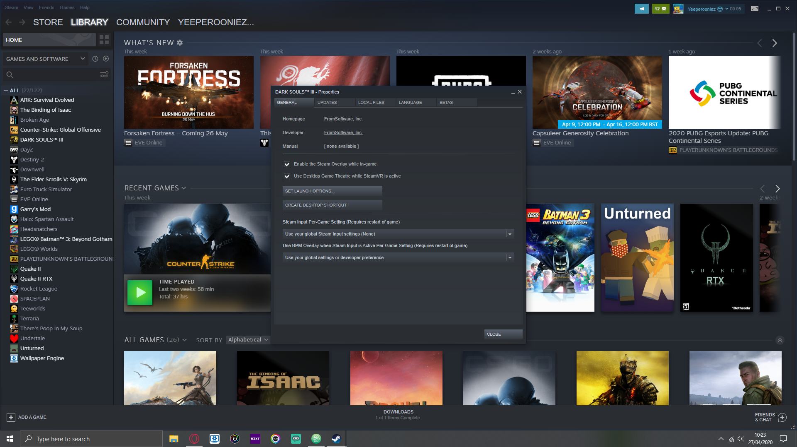
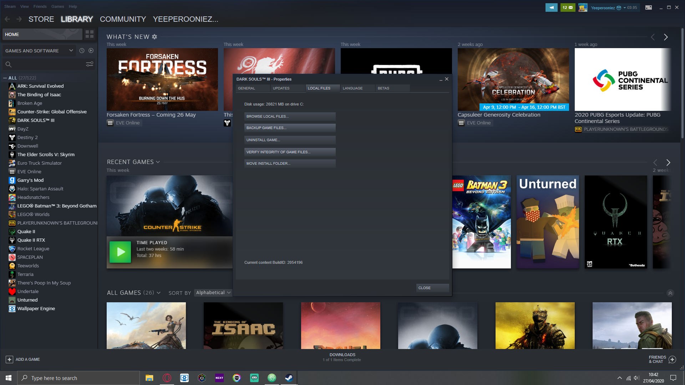

𝙏𝙧𝙤𝙪𝙗𝙡𝙚𝙨𝙝𝙤𝙤𝙩𝙞𝙣𝙜
Welcome to
Why wont my game run?
So you have just bought a new game and downloaded it. However, it just keeps crashing and wont start or just is running slow and not very well. This can be very fustrating and annoying. But try these solutions:

Restart Your PC
This actually help in many cases. There could be memory problems and you just need to clean out your memory. There could also be background programs open that are effecting your game and restarting will close those applications and hopefully your game will be up and running properly.
Stop Overclocking
If you are using overclocking try turning off overclocking (or just turning it down) and see if you game runs well without overclocking. If your game runs better without overclocking it could just mean that your components are having to much strain put on them and they cannot handle it.
Check Video Drivers
It might be that your video drivers are not on the latest update and the game you are trying to play requires something in the new video driver update. Or you are having driver problems. Having driver problems can also cause visual problems on your computer. However, if you do have the latest drivers try uninstalling your drivers and then reinstalling them.
Check Your PC Specs
Go onto the gamepage where you bought and downloaded the game and check the minimum specs, you can also go to Can you Run It and type in the game you are playing and then it will download the test software and then give you the results to see if your PC can run the game you are trying to play. You might also need a windows update or are running an old version of windows or you hardware is to old (GTX 480, RX 580 and/or GTX 660 and more) so you might want to either upgrade your hardware of refund the game
Turn Off Antivirus or Firewall
Sometimes your antivirus might get confused and not know if a program is legitimate or not. This is completely normal and can happen. If you are playing a game online and are having issues your firewall mght see the online game as an incoming online threat. It might also help to start your game in administrator mode so the game is put at a high priority.
Launch Options
Try going online to find some launch options for your game. You can do this in steam by going and right clicking on the game and going to properties and then on the general tab click on set launch options and then paste in the launch options you found online.
Check Your Game Files Integrity
On steam you can check the integrity of your game files or see if your game has any missing files. First right click on your game, go to properties and then got to the local files tab and click on verify file integrity.
Uninstall and Reinstall The Game
This might seem like an annoying thing to do because it might have taken a while to install the game. Make sure that your data has been saved first however. Reintsalling the game after unstalling it can be good because there might just be some broken or missing game files and checking your game files integrity doesnt always work but can help.